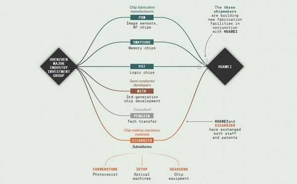

2023-11-21 00:06:00
長期改革的方向
從前述美國的前車之鑒，我們可以總結中國應有的長期治理目標，在於强壯自身，尤其：
1） 發展全系列、全層次、全方位的實體產業鏈，在强力加速升級技術層次的同時，還要盡可能維持既有中低端產能的國際競爭力；
2） 追求合理成長，避免堆積顯性財政債務和隱性社會負債，後者包括貧富差距、環境剝削、文化腐朽、房地產炒作、階級固化、以及經濟虛擬化和金融化。
從上述治理方針，可以立即引申出幾個重要的執行方向：
一） 必須重視財政和經濟政策的可持續性：
美國的赤字消費，有美元霸權兜底，不但可以自由印鈔，還周期性地對外做潮汐式收割，每10年掠奪所得高達十萬億美元的數量級，即便如此，通脹危機只是被推遲，而不是徹底消解。所謂的現代貨幣理論（Modern Monetary Theory），鼓吹無中生有的無限印鈔沒有負面後果，其實是盲人摸象、斷章取義，只看美國經濟在1980-2020年之間的風光榮景，既不在乎遲來但必不會缺席的滯漲終局，也無視中國欠缺建立全球金融殖民帝國的意願和條件。
然而若要限制赤字不可持續地擴大，首先就要先對GDP成長率定下合理可達的目標，切忌好高騖遠。對當前的中國而言，面對金融史觀下即將來臨的歷史轉折點，尤其有謹慎的必要。這裏有以下幾道逆風：
首先是中美脫鈎；這本質上是美國要把中國剔出外包放牧體系。中國將無可避免地損失若干市場份額和技術來源，從而壓低出口型產業成長，並推高研發成本。
其次中國在過去20多年過度追求高GDP成長率，使得政府、企業和家庭的總負債甚至超過美國水平，達到GDP的282%（對比美國的257%；來自JP Morgan研究報告，參見《How Much Debt Does China Have?》 ）。擁有美元霸權的美國尚且無可持續，一旦新一輪危機爆發，中國當然有被連鎖引爆的危險，因此提早收拾整理財政賬目、盡可能縮減負債是應有的未雨綢繆之舉。
第三是國際資本定價，也就是利率，在美元超發的背景下，其實一直低於其自然公允水平，對投資和消費都有著廣汎、持續而顯著的刺激效應。現在美國終於面臨債務和通脹的雙重壓力，這個刺激機制不論過程細節如何，必然即將瓦解。因而中國必須準備面對40年未見的國際資金稀缺時代， 低質量成長將不再能夠滿足投資人所要求的報酬率，大水漫灌只會加大浪費。
綜合上述考慮，我們强烈建議國家徹底放棄恢復平均8%GDP年成長率的念想，改爲以平均5%作爲未來10年的長期目標。這代表著在若干全球經濟低迷的年份，中國必須接受4字頭的成長。
二） 必須將人力資源保留給實體產業，而不是虛擬服務和文書處理
美國在過去40多年的產業空洞化過程中，製造業勞動人口由1980年的1928萬人，佔總勞動力的18.1%，降至當前的1299萬人，占比只剩7.74%。這些藍領階級工作崗位，對應著沒有高等教育卻能過中產階級生活的家庭，原本是20世紀中期美國全盛時代的中堅力量。它們的消失，不但對社會造成天翻地覆的改變，尤其加劇貧富不均，而且與國家經濟的金融化、虛擬化互爲因果、相輔相成。
這些工作被外包了的勞動人口，運氣不好的只能陷入貧困，舉債度日；運氣好的，被吸收進入政府和企業的底層，大幅增快了官僚管理體系臃腫化的過程，進一步削弱其實體經濟的國際競爭力。與其配套的大學教育，自然也因之低級化、浮濫化。美國在1980年有170萬本科生畢業，到2023年已經成長為420萬人。這個過程導致精英學校和其他大學的素質落差急速加大，前者文憑的鍍金效應水漲船高，其招生程序也因而被腐化扭曲，越來越利用各種藉口（例如Affirmative Action肯定性行動）不以學生本身程度為標準，以便藉機圖利富人子弟，近年常春藤盟校的連串招生醜聞便源於此。
原本高等教育適度普及化有其價值，但過猶不及，中國無視在立國原則和經濟背景上的差異，讓高等教育浮濫化已遠超美國程度。2001年大學畢業生剛剛突破100萬人，到2019年突破800萬，四年至今居然又增加40%，達到1160萬人，於是立刻導致青年失業率在四年内從9.7%飆升到今年七月的21.3%，然後不再公開以躲避關注和檢討。
這裏真正的問題不只在於總數，也在於品質：那些畢業生增額的絕大多數，並不對應著實體經濟所需要的工程和醫療人才，而是只能填充政府和企業官僚管理體系底層的文書推手。在當前的中國，製造業勞工短缺、人口結構老齡化、家庭少子化、而且人工智能正要把文書寫作處理全面自動化，卻還將最主要的人力資源依照美國經濟虛擬化的邏輯來向低層白領工作大幅傾斜，無疑是極度愚蠢的自我傷害。
我們建議立刻中止大學擴招，並且對高等教育院校科系啓動全面效益評估，尤其著重於學科教學與學生水平是否與產業需求有合理嚴謹的配套，並針對新增的非工程/醫療系所做出精簡考量與計劃。
三） 必須全面提高運作和投資的效率
前面提到全球資金漫灌的時代即將告一段落，因此所有的大規模資金用戶都必然會被迫提高效率。這裏包括了政府、公營事業和民營事業三個方面，其中民營事業最爲簡單，主要由它們自己適應解決，政府能出手並且該出手的，在於對融資的管理。這又分股市和銀行貸款。對内綫交易、公關炒作和虛僞詐騙等等國内資本及特權勢力的金融掠奪，中國股市監管單位的管理嚴格程度甚至還遠低於已經被大資本腐蝕了50年的SEC（美國證券交易委員會），亟待全面而徹底的整頓加强。至於浮濫借貸，剛剛有恆大集團的前車之鑒，必須吸取全方面的教訓，充分預期資本家的無恥無信，以避免再次面臨一地鷄毛的亂象。
中國公營事業佔有相當大的國家整體經濟份額，其風氣和效率因此尤爲重要。但國企主管的職級偏高，往往超過監管單位的主官，造成執行上的先天阻礙。建議國家盡可能壓低國企主管的級別，以方便監管，並可針對規模經濟效應（Economies of Scale）不特別顯著的產業進一步拆分（例如油氣業）。針對國企外銷可能過度内捲的弊病，可以視個別產業需要設立對外統籌銷售機構，這些對外銷售機構也可以用來管理戰略性物資的出口，例如石墨和稀土。
要提高政府自我運作的效率，則有幾個努力方向：首先是養成預先考慮負面因素、做好各種書面預案的風氣和慣例，以避免朝令夕改、政出多門。例如2022年8月Pelosi訪台前後，政府姿態口徑嚴重不一致，無謂地損傷了公信力。又如該年底的新冠政策變更，雖然是因應客觀局面突然改變的必要之舉，但顯然仍在事先可預期的範圍内，如果曾經做好詳細的預案，便不至於手足無措，類似退燒藥的儲備和分發可以有序進行。
其次是充分利用電子政務的革新，仔細檢討行政業務流程，追求統一明定，並且建立跨級抽查監督的管道，以減低組團貪腐的危害。對於大規模的投資決定，如果不涉及機密，應盡可能將決策流程和正反面論證做出簡潔明確的書面解釋以公開並留存，方便事後檢討；例如港珠澳大橋的流量估算嚴重失實，值得深究以杜絕類似的浪費。
但當前中國政府管理效率最低的重災區，還在於學術和科研；這是因爲在這兩方面，甚至不能說是監管不嚴，而是根本不存在監管。學術和科研的貪腐形式，與其他政務不同，主要不是侵占或受賄，而是造假誇大來詐取項目、竊佔職位、然後收割股市，因此當前的紀委和監委系統都無法發生太大作用。
中國的學術誠信和論文内涵，原本就遠遠不如美國，例如中美近年發表的AI論文數量比例為3：1，但ChatGPT卻依舊在美國出世，中國落後2-3年；偏偏大時代背景下的全球反殖民革命潮流和美國全力推行的中美脫鈎，都在凸顯高效率内部治理和經濟發展的重要性，而學術和科研正是中國產業升級和維持國際競爭力的絕對關鍵，所以本文進一步詳細探討於下。
四） 必須建立尊重誠信的學術文化
改革開放以來的中國治理哲學，一直尊重理性和專業，但專業事實和行業權威其實是兩回事。尤其新世紀的中國學術界益發功利，早已不再普遍有幾代前老科研人的無私奉獻精神，早年遺留下來任由行内權威自決的體制，卻非常方便新一代的學閥和學術詐騙集團自由運作、獨占話語權，從而謀取職能和金錢上的私利。
另一方面，尖端研發先天就有很高的不確定性，造成監管上的極度困難。越是想要條例化、正規化，越是容易產生反作用。例如中國科研學術界是全世界要求出版論文最多最繁的，於是很自然的，每篇論文的實質内涵也就遠遠最低，造假誇大的問題也遠遠最為嚴重。因此政府的監管，除了放鬆揠苗助長的頻繁論文要求之外，只應該專注在最關鍵、最無爭議、最能明確定義的事項之上，也就是打假和立項。
中國科研學術界的造假問題，早已超過坍方的程度。每年都有良心人高調實名舉報造假，然後無一例外在發回單位自審之後，被定調為“誤會”，例如成果照片被修圖軟件改得面目全非以支持論文的虛構結論，居然也都算是“無意的誤用”。這些亂象已經發展到造假本身就是專業傳承的地步，例如先有裴鋼憑藉無外人能複製的成果做到中國科學院院士，被饒毅教授實名舉報多次無果，幾年下來反而是前者的後輩合作者憑藉同樣無法由外人複製的後續論文也紛紛評上了院士，多次造假醜聞完全不被考慮。
政府發展高科技的政策和投資，都由行内權威來決定方向。如果這些權威不是自己忙著造假、就是在為同僚遮掩，那麽指望他們推薦最有利國家而不是最有利自身的方案，當然是緣木求魚。因而整頓學術的最基本步驟，便在於嚴格打假。而且造假不同於誇大或空洞，可以簡單客觀認定，所以政府不必擔心如何確認專業事實，只須要建立一個專職打假的機構，平行或附屬於紀委或監委，但專門針對學術造假事件；一旦排除方便官官相護的現有機制，自然能還學術界一個清白。
此外我們也建議將專業權威的頭銜，例如院士，與行政、財務、和人事職權做徹底切割，也就是只作爲榮譽銜。當前的學術管理體系下，權威學閥可以用專業論斷來排斥政府監察，然後用職能權位來打擊學術上的挑戰。學術專業的真理必須通過公開對立的尖銳辯證才能求得；賦予學閥行政地位，在中國尊卑分明的傳統文化和政治體制下，基本保護放任他們自由扭曲真相，以科學之名行反科學之實，絕非國家社會之福。
五） 科研項目必須做嚴謹客觀的評估
另一個政府應該加强監管的重點方向，在於立項，尤其是基礎科研的立項。這裏有一個語義學上的歧義，常被學術詐騙集團利用，值得先行澄清：所謂的“基礎科研”，其實有兩個常被混肴的意思，首先是純粹的泛式（Paradigm）突破，無需也基本不會有任何實用可能；另一個本質上是有明確實用目的的應用科學，但因還不成熟所以成功與否不能確定的技術嘗試。然而在政府資助這件事上，這兩者卻剛好南轅北轍：前者既然是要突破既有泛式，那麽當然連大方向都不能事先確定，立項更無從談起，正確的策略是把最節約的資源撒在最廣汎的嘗試之上。對於後者，立項的先決議題自然應該在於其是否為達成特定實用目的的最佳可能方向。
詐騙集團利用語義學上的模糊，一方面要求重點投資、突出立項，另一方面卻又拿著“基礎科研”的招牌，堅決拒絕針對實用目的的性價比評估。結果十四五的國家基礎科研重點項目，居然普遍經不起正經的推敲。例如排在頭位的是量子計算和量子通信，其被吹噓的潛在用途，在於前者能破解當前互聯網和加密貨幣所用的密碼，而後者能替代那些密碼；但實際上早就另外存在完美的替代技術，亦即後量子密碼（Post Quantum Cryptography），能夠完全抵抗任何量子計算的算法，不但價格低廉、使用方便、性能可靠，而且已經成熟，只需短暫試用。結果美國官方根本不理會量子通信和量子計算，只花了一年就讓後量子密碼完成試用，正式在全國推行。反觀中國，屈服於中科大的游說力量，將所有的籌碼放在不靠譜的量子通信和量子計算之上，原本領先美國的後量子密碼技術反而被棄之不顧。這正是科技管理徹底腐化的典型惡果，是當前嚴厲的國際形勢下所不應容許的。
另一個十四五重點項目是核聚變發電，比之量子計算更加不靠譜，連所需材料和粗略設計也根本不存在，行内人自己都反復公開承認30年内絕無可能實用，實際上則可以嚴謹論證永遠都無應用可能（參見前文《從假大空談新時代的學術管理》） 。然而同樣是在等離子所的游說之下，獨占了國家管理單位對新能源基礎科研的關注和資源，導致一個已經在試用階段的關鍵技術（指液流儲能電池）只拿到不足核聚變百分之一的資金，坐視電網儲能繼續做為全球推廣新能源的最嚴重短板，對國家經濟持續造成每年千億元以上的隱性傷害。
這些拿著基礎科研招牌來詐騙的團隊，不但腐蝕學術文化，造成人力財力時間上的浪費，更糟糕的是擠占資源，排擠對國家有真正重要價值的替代技術。有些居然還設立了附屬公關組織，例如中科大的“風雲之聲”，專門負責壟斷傳媒管道，壓制過濾批評聲浪，以方便在申請項目的同時，上市自己的公司，然後大肆搜刮。中科大自我炒作最力的潘建偉，就是先利用量子通信在股市收割一波韭菜，事後公司唯一的客戶發現毫無用處，營收歸零，於是才必須換上量子計算的新招牌來進行下一輪的收割。換句話説，不做客觀評估就幫助他立項的科研管理單位，其實是股市詐騙的共犯。
我們建議國家收緊基礎科研的立項和獎勵，要求每個項目必須先明確最終的實用目的，詳細列舉其他的替代性技術選項，最終解釋本技術的相對優越性，並著重論證時程進度上的承諾。這些解釋和論證應該公開進行並給予反對者充分評論的機會。立項並通過官媒吹捧過的重點投資如果爛尾了，就應該事後復審，若發現評審失職便必須追責；例如當年的漢芯是明顯而純粹的詐騙，但事後卻沒有任何人爲之負責，以致認可並推動假芯片的爛人院士，得以繼續把持國家半導體產業發展政策、扭曲其方向，造成可見的遲滯效應，至今其惡果仍在餘波蕩漾之中。此外因爲科研詐騙的大筆進賬在於股市，監管單位應該考慮嚴格限制學術界的創業股權所有人，如中科大和潘建偉，以及受他們雇傭的公關人員，不能在媒體上公開炒作，國家和公衆對項目的預期應以前述的立項評估文書爲準。
【後註一，2023/12/01】去年六月的《社會主義國家應該如何管理資本》以及最近的這三篇《金融史觀》是集博客多年論證之大成的政策建言總結，而其中最核心的論點，正是金融改革的重要性和應循原則。
一個月前，政治局最高層舉辦了一場中央金融工作會議，由總書記親自指導全新的政策方向。剛剛有人將公共論壇上出現的解讀轉發給我；一家之言，未可盡信，但其重點與過去幾個月的諸般改革舉動相符，值得大家參考。
1 本次會議叫做里程碑式的會議，對過去的評價不高、負面；金融不是核心是血脈。
2 本次會議最主要的改革就是黨管金融體制，組成中央金融委員會；管政策、管人事、管股權；各省成立金融委員會；以後不再保留國務院金融穩定發展委員會及其辦事機構；一些重要的職位不再需要留學經歷。
3 黨管金融的核心理論在於，本質上是黨的信用理論，信用債是黨的信用，最後是政治局兜底，要防止透支黨的信用。
4 黨管金融的政治性問題，不能出現“華爾街政治”，所以，廳局級以上領導幹部配偶等不允許從事私募股權基金投資及從業等。
5 一行兩會權威不夠，黨管幹部，管住國有金融機構，關注金融腐敗。
6 現在不是降薪的問題，而是追薪，發出去的錢，還要追回來。
7 金融監理總局是超級監理機構，強化機構監理、行為監理、功能監理、穿透式監理、持續監理；兜底式監管，金監總局全覆蓋，不再是誰發牌照誰監管了。
8 金融監局下面設計稽查局，和司機機關配合；會參照證監會的稽查隊伍設定。
9 中央支持了貨幣政策和金融監理可以分離的理論。
10 這次會議以後，明顯感覺到處置小型銀行不良資產等工作加快。
11 不能對標美國金融模式，要有中國特色金融發展道路，金融就是服務業，為實體經濟服務，為高科技服務，不鼓勵把金融業發展作為經濟發展的優先地位，地方經濟也同樣；不鼓勵金融創新了，很多地方都抹掉了金融科技的概念；中國不需要太多的金融中心城市，就是上海和香港；（記得之前您拒絕參加海南金融創新的會議，不過個人覺得上海和香港已根深蒂固，推到重來是不是會更好？尤其是海南對 標香港和新加坡個人所得稅15%封頂是否能更容易吸引資本和人才？答：金融變數太多，切忌高度競爭，否則不斷打破下限、全新花樣一時還看不出來。香港上海錢來得容易，用的只是基本的藏錢和詐欺，反而方便監督管理。）
12 金融業發展不能高於實體經濟。
13 銀行業融資和服務仍然是我國金融資源分配和發展的主要方式。
14 中央地方金融格局大變化，解決地方之間爭取資源、監理能力不夠等問題；地方金融機構將嚴格審批，業務要嚴格限制在本地，不准風險外溢，監管更嚴格。
15 國營金融機構主導，支持國有大型金融機構做優做強，當好服務實體經濟的主力軍和維護金融穩定的壓艙石，嚴格中小金融機構准入標準和監管要求；明確國有金融機構是主力軍。
16 加速處置小金融機構風險；政府發債，注資，清理不合格股東，清理不良資產，注入優質資產等；中小銀行改革化險給了路線圖。
17 化解地方政府債務風險；穩健化解存量，嚴格限制新增；透過展期、借新換舊、置換等方式；中央這次下決心了，要化解地方政府債務；鼓勵地方政府賣資產；不只是支付債務，還要支付隱形債務，工程款、薪資等。
18 把地方融資平台分類管理，高債務的省份只能接新還舊，不能新增；防範道德風險。
19 央行透過緊急貸款對地方政府難以償還的提供緊急性的流動性支持，但最長期限不得超過兩年，僅用於“緊急事項”。
20 對城投債有要求，地方政府，尤其是縣一級，發不債了，需要出具說明。
21 繼續金融反貪。
22 網路平台金融業務沒有明確；沒有再提金融科技，現在提的是「科技金融」和「數位金融」；科技金融一詞內涵豐富，包括引導及促進銀行業、證券業、保險業等金融機構及創業投資等各類資本；AI技術發展、監理政策完善、業務轉型、資本市場促進，我國金融科技應該有新發展。
【後註二，2023/12/24】前天上《龍行天下》節目（參見《23.12.22【觀點│龍行天下】中國、美國與ECFA》）科普了正文的部分論述，其中包括美國資本市場的浪費。剛好Hyperloop One壽終正寢（參見《Once buzzy startup Hyperloop One to shutter after its sci-fi transit project failed to get much momentum》），灰飛烟滅的5億美元主要來自Dubai，始作俑者Elon Musk反而賺了，完美地示範了掌控全球金融投資體系的美方如何從極端愚蠢的“長生仙丹”式科技方案一樣可以獲取暴利。
相對之下，中國本土的詐騙集團就只能騙自己國人的錢了。以下是IEEE反思量子計算的一篇文章（參見《Quantum Computing’s Hard, Cold Reality Check / Hype is everywhere, skeptics say, and practical applications are still far away》）；這裏可怕的地方在於這類專業討論的譯文，在中國是被嚴密封鎖的。運用政治力量，完全封鎖技術討論的人，真的可能是中國的“科技脊梁”嗎？
【後註三，2023/12/24】《龍行天下》節目中還提及了《bloomberg》針對中國政府將半導體產業研發的管理重任交給華爲的一篇文章，有興趣的讀者可以在此找到原文：《China Secretly Transforms Huawei into Most Powerful Chip War Weapon》。因爲有付費墻，我把最重要的那張圖轉載於下，供大家參考：

【後註四，2023/12/28】今天在閲讀中國工業發展歷史相關議題的時候，注意到1980年代改開初期，先行的深圳蛇口工業園區門口曾有一個“時間就是金錢，效率就是生命”的標語牌，對此後40年的中國工業技術文化有深遠影響。這個效率就是要搶時間的觀念，在當時無疑是切合時代需求的，但它其實並不具有普世性和永恆性，因爲它有一個重要的隱性前提，亦即正確的技術方向事先已由別人反復驗證，所以前路確定，無須選擇，只要兩條腿努力就行。現在中國的科技產業層次基本達到世界先進，未來發展方向已經無可借鏡，如果繼續無腦地聽信資本公關炒作，反而會加速衝下懸崖；換句話說，動手動腿之前，必須先用上眼睛和腦子，否則被詐騙集團搜刮，是沒有外國中央銀行和投資人來代爲買單的。
【後註五，2024/03/05】李强總理在全國人大做政府工作報告時，定下“5%左右”為2024年的GDP成長目標（參見《政府工作报告极简版来了！只有700字》）；雖然不是博客所建議的4.8%那般明確地以長遠深刻發展為重，但亦相差不遠，“左右”兩字尤其值得玩味。
【後註六，2024/05/12】本周留言欄48樓討論到中國智庫和社科學術界的水準，我們隨手就有當日的一個案例可供示範，但這個問題當然不局限於個別人員，而是整個行業的普遍現象。要支持上述這個更强力的論斷，同樣在近日就可以找到明確的證據，這裏我指的是美國援助烏克蘭的610億美元法案通過衆議院一事：回顧今年3月，又一名共和黨衆議員忽然提前離職（參見《The ‘Great Resignation’ continues as yet another GOP rep exits》）；如同留言欄已經討論的，這絕非正常人事變動，因爲衆議員任期很短、只有兩年，歷史上須要及早離職的議員不多，而且一般只會提前宣佈，依舊留任幾個月至選舉後。本届衆議院的政黨席次差別很小，離職議員更加應該尊重黨的大局需要，然而過去幾個月卻一連有幾個共和黨議員急著離職，而且都是立即生效，以致共和黨在衆議院的權力架構岌岌可危。這裏相關的美國國會議事法規標準是“過半數”，而當前的所謂半數是217席，在3月22日之後，議長Mike Johnson手裏剛好只剩217個人頭，一個冗餘都沒有；換句話説，再有一名議員被策反，他就將徹底失去多數黨地位。所以我一看到那條新聞就立刻預測（在3月23日的學術座談會中討論），因Mike Johnson的堅決反對阻撓而卡在衆議院多時的援烏法案將會有變數，不到一個月後果然如此。這裏讀者應該特別注意的，不在於事先只有我一個人看出端倪，畢竟博客示範如何以嚴謹的邏輯辯證分析對世事做出人力可及極限的正確預測，已經有過千百次，到了例行公事的地步；而在於四月援烏法案正式通過之後，華語智庫和網紅學者連作爲事後諸葛亮的馬後炮都放不好，普遍忽略Johnson做出180°政策轉向這條表層新聞幕後，當事人在軍工利益集團公開碾壓性威逼之下的無力和無奈，以及本届衆議院共和黨民粹派已在大選前七個半月被釜底抽薪、徹底閹割的事實（爲了避免事情鬧大，成爲大選議題，建制派見好就收，沒有真正推翻多數黨地位，發力拿捏得相當精準）。
歷史上中央決策高層除李克强任期後段做過輕微短暫的咨詢，對智庫界相對蔑視，幾乎當成籠裏養著的倉鼠，亦即不作實際生產任務的期許，基本只有觀賞性價值。所以中國智庫行業亟需奮發圖强，努力提升研究水平，而不是只寫陳腔濫調、甚至做敵方宣傳的復讀機，然後靠著拉關係走後門來玩弄自我營銷，與媒體利益集團沆瀣一氣、欺世盜名。
【後註七，2025/03/28】我曾在本篇文章的【後註三】以及《台灣的國安和產業前景》的【後註二】討論華爲成立子公司SiCarrier新凯来，專職負責開發半導體製程所需的各種設備，包括光刻機。昨天有報導（參見《China’s SiCarrier Surprises Chip Industry By Unveiling Extensive Range of Chip Equipment at SEMICON 2025, Potentially Breaking ASML’s Dominance》）稱SiCarrier在上海舉辦的SemiCon 2025 China展覽會中，公佈了一系列替代歐美設備的新產品，包括“峨眉山”12英寸單片減壓外延生長設備、“三清山一號”柵極氧化/氮化設備、“三清山二號”超快尖峰退火設備、“三清山三號”均溫/尖峰退火設備等等。
同個展覽會中，還宣佈了SMIC中芯國際將在今年開始量產5nm晶片，不過因受ASML制裁所限，必須采用舊式的DUV深紫外光光刻機，參見《SMIC Is Rumored To Complete 5nm Chip Development By 2025》。